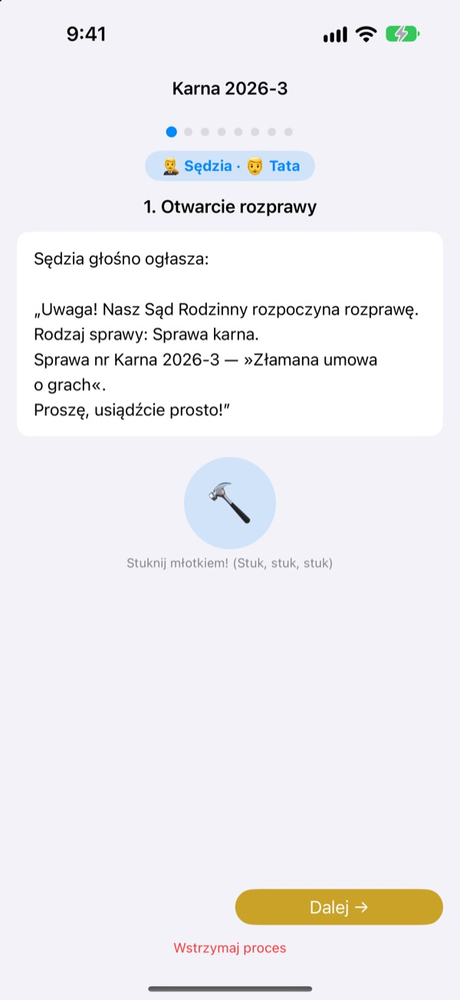
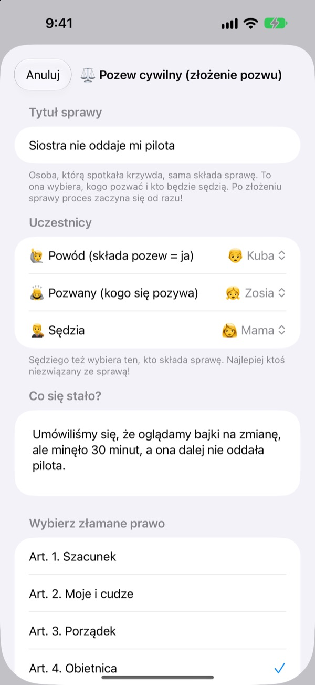
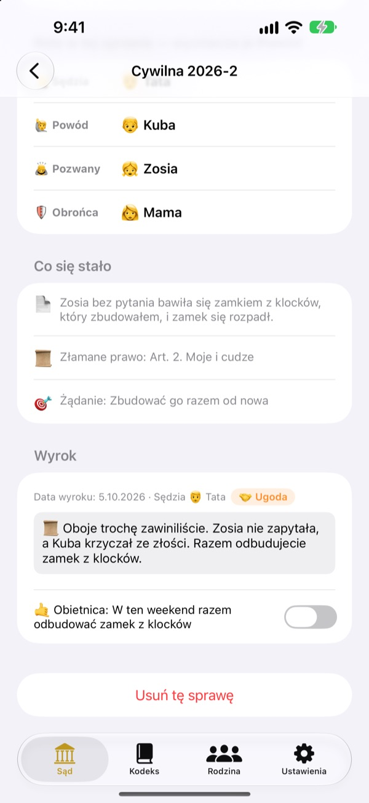
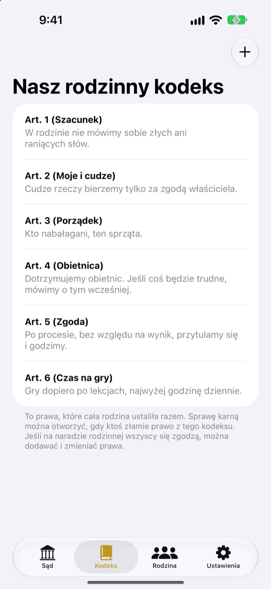

Niesprawiedliwie?
Bez łez, idziemy do sądu.
Dziecko samo składa pozew jako powód, a rodzina dzieli się rolami sędziego i obrońcy. Na każdym etapie scenariusz podpowiada, czyja kolej i co powiedzieć, więc nawet pierwsza rozprawa idzie jak prawdziwa.
Bez reklam, zakupów i rejestracji. Wszystko zostaje na tym urządzeniu.

Przeprowadź rozprawę
Krótka sprawa: „Brat nie chce oddać pilota”. Zmień u góry poziom słownictwa, uderz młotkiem i włącz timer. Będzie dźwięk, sprawdź głośność.
„On zaczął!” Zmęczony ciągłym rozstrzyganiem?
Gdy wybucha kłótnia, zwykle rozstrzyga ją dorosły. Przegrany płacze, bo czuje się skrzywdzony, a zwycięzca nie bardzo wie, dlaczego wygrał. Sąd Rodzinny daje dzieciom kolejność: opowiedzieć całą swoją wersję i wysłuchać drugiej do końca. A wyrok kończy się obietnicą, nie tylko karą.
Kto czuje się skrzywdzony, sam składa pozew
Kto uważa, że coś jest niesprawiedliwe, zostaje powodem i składa pozew. Przeciw komu i kto będzie sędzią, decyduje składający. Dzieci mogą pozwać nawet mamę i tatę.
Widziałeś, jak ktoś łamie domowe prawo? Zostań prokuratorem i wnieś sprawę karną. Sędzią może być tylko ktoś, kto nie jest ani powodem, ani pozwanym.

Wyrok kończy się obietnicą
Razem z wyrokiem ustala się obietnicę lub karę i odhacza ją, gdy zostanie wykonana. Zakończone sprawy stają się waszymi precedensami.
Pomysły na karę zaczynają się od naprawienia szkody i załagodzenia przykrości, bardziej naprawa niż kara. Mniej gier i telewizji to ostateczność.

Wasz dom, wasze prawa
Zapiszcie jako artykuły zasady ustalone w rodzinie, na przykład szacunek, sprzątanie i dotrzymywanie słowa, i dodawajcie lub zmieniajcie je w każdej chwili. W pozwie wybiera się złamane prawo.
„Poznaj sąd” wyjaśnia, co robią sędzia, powód, prokurator i obrońca oraz jak przebiega rozprawa.

Start w trzech krokach
- 1
Dodaj rodzinę
Wystarczy imię i emoji. Bez konta.
- 2
Złóż sprawę
Niesprawiedliwość to sprawa cywilna, złamane domowe prawo to sprawa karna. Potem wybierz sędziego.
- 3
Otwórz rozprawę
Mów według scenariusza, pilnuj czasu timerem i ogłoś wyrok uderzeniem młotka.
Słowa, które rosną razem z dzieckiem
- Sędzia
- Prosty: Rozjemca · Sądowy: Przewodniczący
- Powód
- Prosty: Poszkodowany · Sądowy: Powód
- Pozwany
- Prosty: Odpowiadający · Sądowy: Pozwany
- Prokurator
- Prosty: Świadek · Sądowy: Prokurator
- Oskarżony
- Prosty: Odpowiadający · Sądowy: Oskarżony
- Obrońca
- Prosty: Pomocnik · Sądowy: Obrońca
- Sprawa cywilna
- Prosty: To niesprawiedliwe · Sądowy: Sprawa cywilna
- Sprawa karna
- Prosty: Złamana obietnica · Sądowy: Sprawa karna
Wybierz poziom słownictwa w Ustawieniach, a słowa na ekranie i w scenariuszu zmienią się naraz. Dla przedszkolaków spróbuj poziomu Prosty, dla uczniów Standardowy.
Częste pytania
Od jakiego wieku?
Każde dziecko, które umie czytać, może grać z rodzicem. Ze scenariuszem, podpowiedziami i poziomem Prosty mogą dołączyć też młodsze, jeśli dorosły czyta na głos.
Czy to naprawdę za darmo?
Tak. Bez reklam i bez zakupów odblokowujących funkcje. W Ustawieniach jest dobrowolny napiwek dla twórcy, który niczego nie odblokowuje ani nie blokuje.
Czy potrzebny jest internet?
Nie. Rozprawy i akta działają całkowicie offline. Internet i logowanie do iCloud są potrzebne tylko do wysłania opinii z Ustawień.
Gdzie są przechowywane dane?
Rodzina, prawa, rozprawy i wyroki są zapisane tylko na urządzeniu i nie trafiają na żaden serwer. Do twórcy docierają jedynie opinie, które sam wyślesz, i anonimowe statystyki użycia, które cię nie identyfikują.
Czy mogę zrobić kopię lub przenieść dane na inne urządzenie?
„Zapisz dane” w Ustawieniach eksportuje wszystko do pliku, a „Wczytaj dane” na drugim urządzeniu przywraca wszystko tak, jak było. Kopie ze starej wersji internetowej też da się wczytać.
Czy działa na iPadzie?
Tak, na iPhonie i iPadzie. Duży ekran świetnie sprawdza się, gdy cała rodzina siedzi dookoła.
A jeśli kary będą zbyt surowe?
Gdy prokurator żąda kary, scenariusz przypomina, by nie była zbyt ciężka i dała się wykonać. Pomysły na karę zaczynają się od naprawy: naprawić szkodę, załagodzić przykrość, spojrzeć oczami drugiej osoby.
Jak usunąć wszystko?
Po usunięciu aplikacji znikają wszystkie akta z urządzenia. Nic nigdy go nie opuściło, więc nigdzie indziej nic nie zostaje. Aby usunąć wysłaną opinię, napisz do nas.
Błędy, pomysły albo coś innego? Napisz na leeo@kakao.com. Opinię możesz też wysłać z ustawień aplikacji.